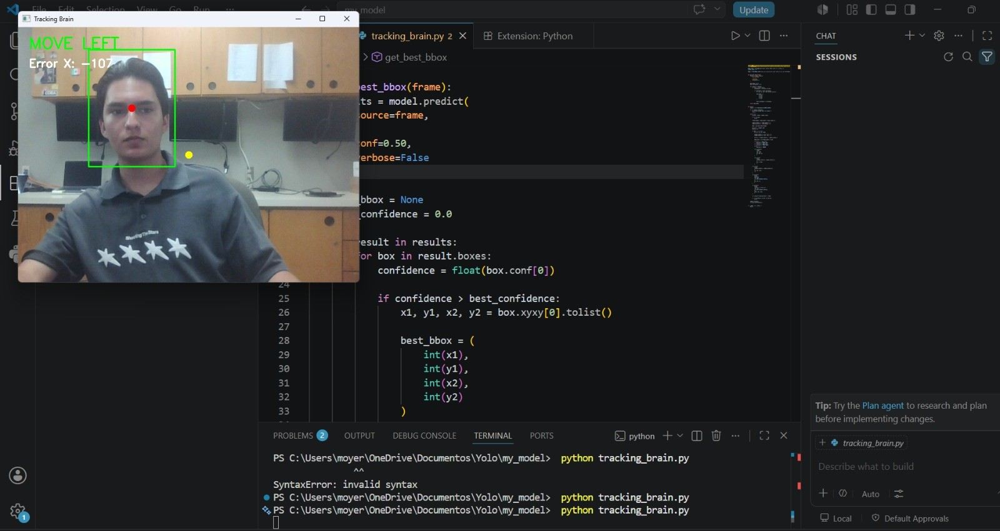

Drone Project
A compact 4S Micro Toothpick FPV drone with a custom 3D-printed frame and autonomous surveillance capabilities.
- Computer vision using Python, OpenCV, and YOLO
- Target tracking and autonomous movement commands
- Mechanical design, electronics, and flight control